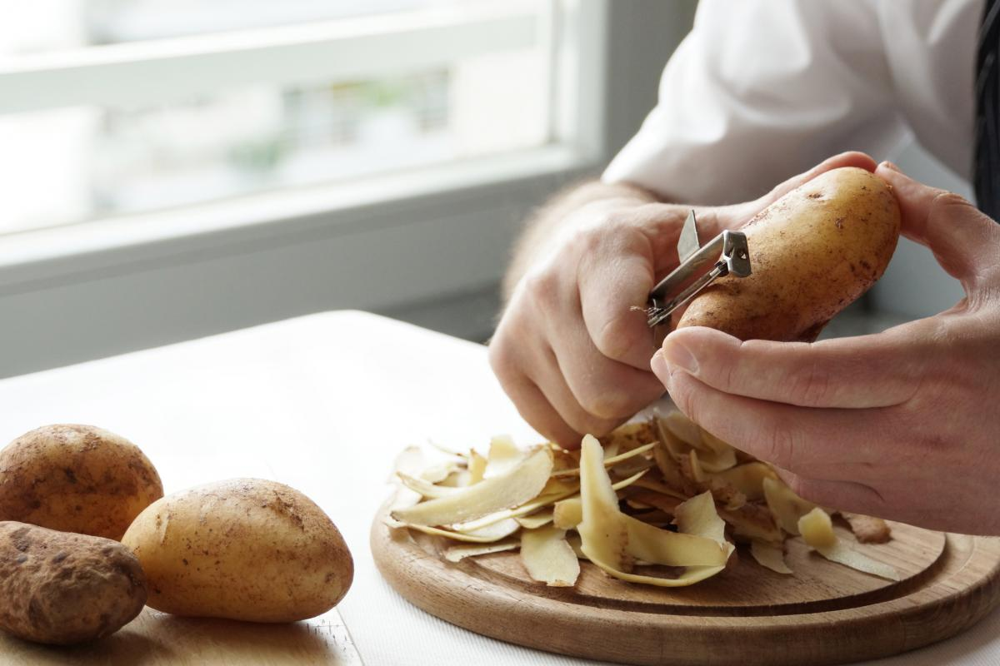
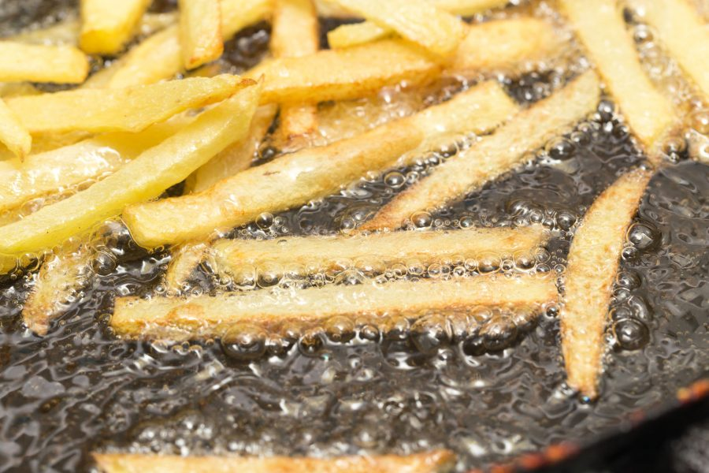
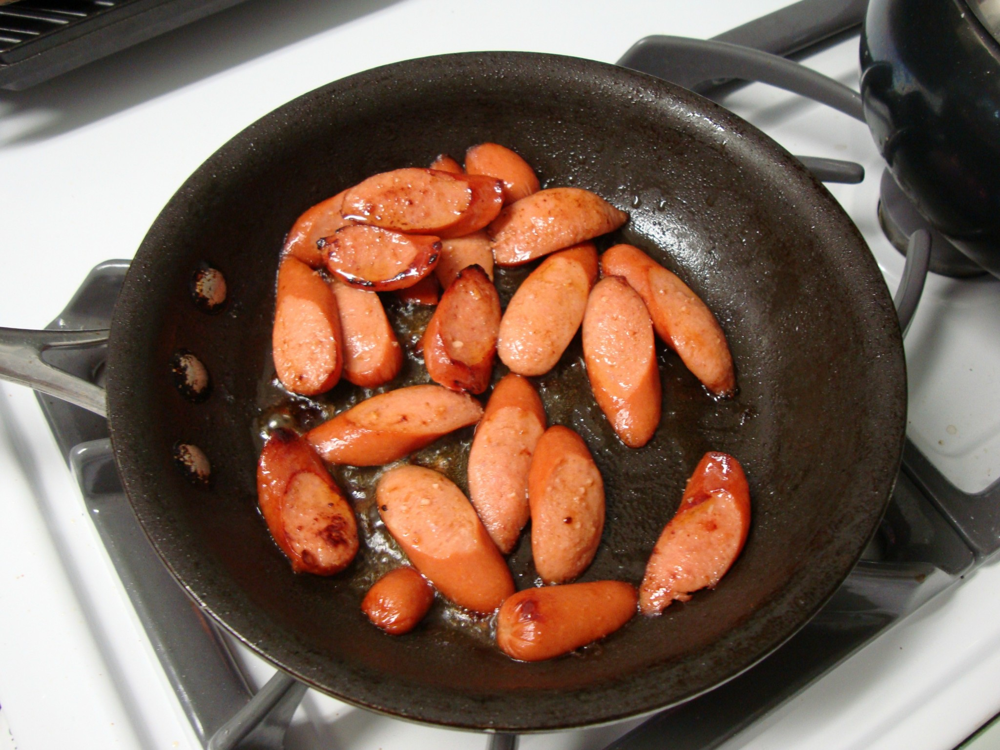
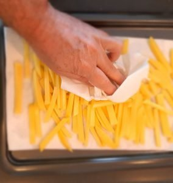
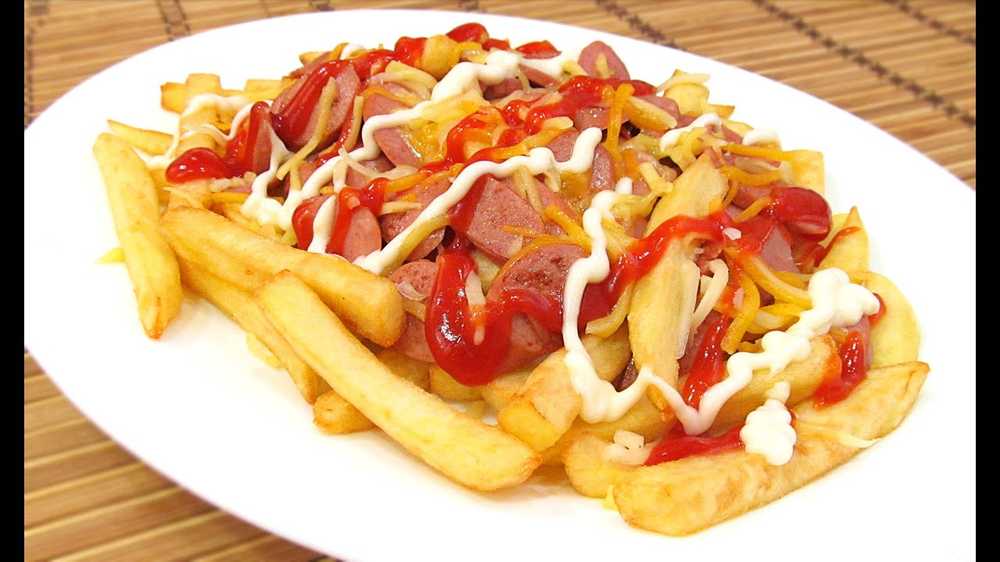

RECETA DE LA SALCHIPAPA
INICIO
IMAGENES
PASOS
- PASOS
- Pelar y cortar las papas. Secarlas con papel absorbente.

- PASOS
- Freírlas en abundante aceite caliente.

- PASOS
- Mientras tanto, hervir las salchichas o cocinarlas a la plancha y cortarlas al bies, o sea, con un corte diagonal.

- PASOS
- Retirar las papas, secar en papel absorbente y salar

- PASOS
- Servir en una fuente pequeña con las salchichas encima. Sumar aderezos a gusto.
